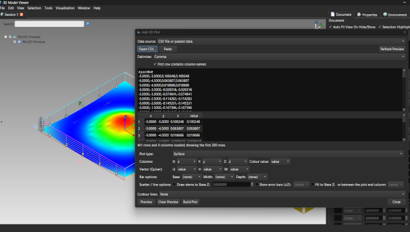
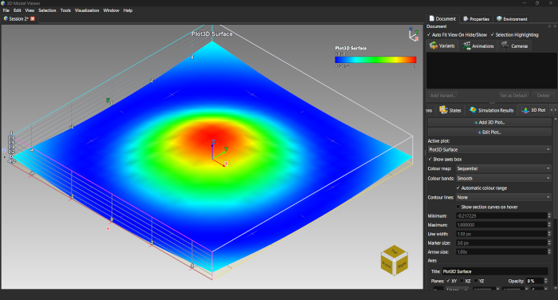
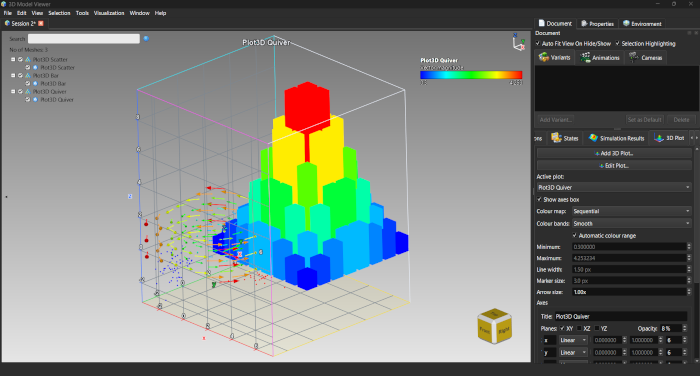
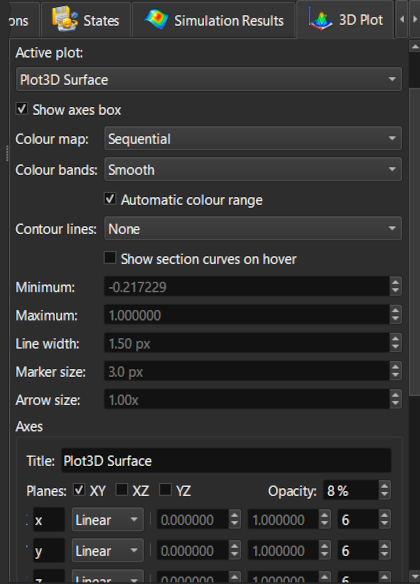
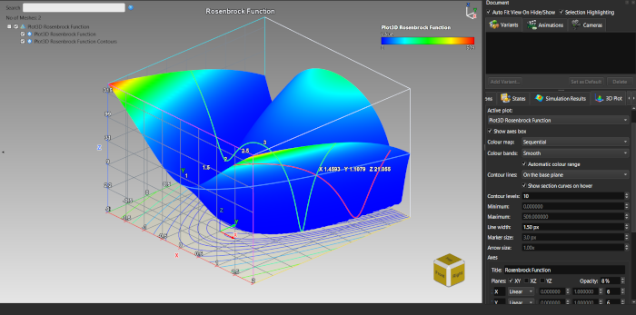
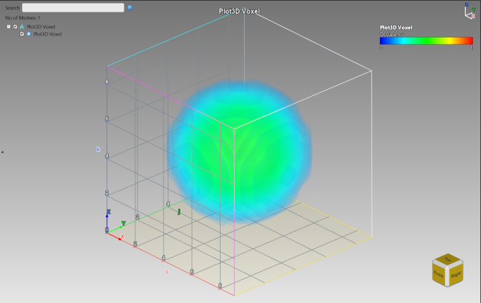

Lesson 23: 3D Plots from CSV Data
Introduction
ModelViewer is not only for models: it can plot your own data in 3D, in the same scene and with the same camera, selection and export tools. Surfaces, contours, lines, scatter, bars, voxels and vector fields are drawn from a table of numbers - a CSV file or pasted text. This lesson builds a plot from a CSV and shows how to control it afterwards.
sample-models/Plot3D. It is generated, not measured, and each file has a shape that is easy to recognise: surface_ripple.csv, scatter_clusters.csv, line_helix.csv, bar_histogram.csv, voxel_sphere.csv, quiver_vortex.csv and more.
Your First Plot: a Surface
surface_ripple.csv - a 21 x 21 grid of x, y and z = sin(r)/r. You can also Paste text; Delimiter and First row contains column names adapt to your table.
The Add 3D Plot dialog with surface_ripple.csv loaded and the columns mapped
The ripple surface built in the scene, with its axes box and colour legendThe Seven Plot Types
| Plot type | Try this file | What to look for |
|---|---|---|
| Surface | surface_ripple.csv, surface_scattered.csv | A ripple peaking at 1.0 in the middle; the scattered file has no complete grid and is triangulated from irregular points. |
| Contour | surface_ripple.csv | Only the iso-lines of Z, optionally flattened onto the base plane. |
| Line / Curve | line_helix.csv | A helix of two turns; row order matters for a line, and the colour follows z along the curve. |
| Scatter | scatter_clusters.csv, scatter_error_bars.csv | Three clusters coloured by their id; scatter colours are per point, not interpolated. |
| Bar / Histogram | bar_histogram.csv, bar_histogram_1d.csv, bar_signed.csv | An 8 x 8 bump of bars; the 1-D file is one row of eight bars (set Y to (none)); the signed file has bars above and below their base. |
| Voxel / Volumetric | voxel_sphere.csv | A sphere in a 9 x 9 x 9 grid, denser in the middle (map X/Y/Z to i/j/k and Colour value to occupancy). |
| Vector (Quiver) | quiver_vortex.csv | Arrows curling around the Z axis and lengthening with distance (map U, V, W to the matching columns). |

A scatter, a bar chart and a vector field built into one sceneControlling a Plot Afterwards
Everything about a built plot lives in the 3D Plot tab. Choose the Active plot, then change:
- Title, Colour map and Colour bands; the colour range is automatic (Automatic colour range) or fixed with a minimum and a maximum
- Line width (lines), Marker size (scatter), Arrow size (vectors), and bar width and depth
- Show axes box and the reference Planes (XY, XZ, YZ), with their opacity, frame the plot
- Edit Plot... reopens the plot's definition: change the data or the columns and rebuild it in place with Rebuild Plot

The 3D Plot tab with the controls of the active plotContour Lines and Section Curves
Any surface can carry iso-lines of Z. Set Contour lines to On the surface for dark lines drawn on it, or On the base plane for colour-mapped lines flattened onto the floor of the axes box, and choose the number of Contour levels.
Tick Show section curves on hover and move the cursor over the surface: through the hovered point you see the curves where the X, Y and Z planes cut the surface (red, green, blue like the axes; the blue one is the contour line through the point), together with the point's data values.

Contour lines on the base plane and the section curves through the hovered pointScatter, Bar and Voxel Options
- Scatter: draw stems to Base Z, show error bars (
scatter_error_bars.csv) or fill to a base - the next lesson shows fills in detail. - Bars: Base, Width and Depth columns are optional; without them bars start at 0 and use a width and depth of 0.8. A column named for Z gives the height, so negative values hang below the base.
- Voxel: the plot is drawn as a volume; map X, Y, Z to the grid indices and the colour value to occupancy, and you get a semi-transparent cloud like the volume rendering of Lesson 20.

voxel_sphere.csv drawn as a semi-transparent sphereSaving and Exporting
Plots are stored in the .mvf session with their data, definition, axes and notes, so Edit Plot... still works after you reopen it. Point and line plots also export to glTF, GLB and OBJ together with the rest of the scene. Plots are not drawn by the ray tracer.